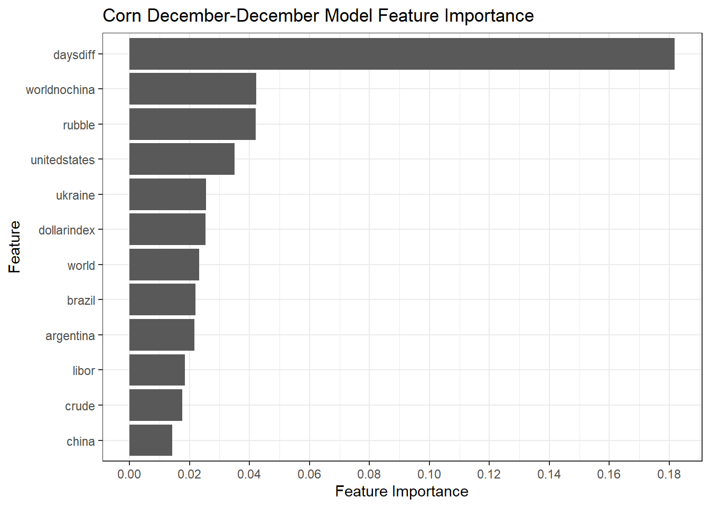
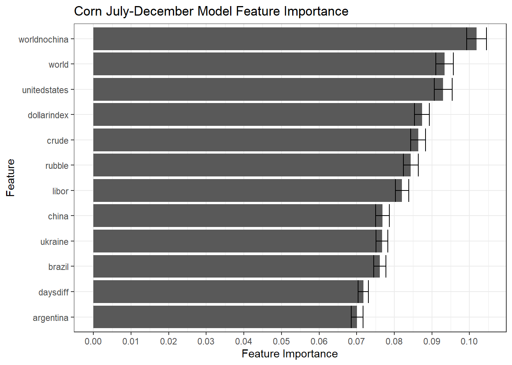

Section 3 Feature Importance
The study of feature importance is important in the modeling process and helps to find those features that have the greatest influence in predicting the chosen observable. In practice we make use of a collection of different feature importance techniques
- MDI - Mean Decrease Impurity
- MDA - Mean Decrease Accuracy
- SFI - Single Feature Importance
- CFI - Clustered Feature Importance
- SHAP - Shapley Feature Importance
- PCA - Principle Component Analysis
To find the technique that overlaps with most with what we expect to see from a PCA we make use of the weighted tau technique.
3.1 ML model performance
In order to apply the methods outlined above we need to apply some machine learning techniques. Specifically, we apply two linear
- Multi-variate linear regression
- Multi-variate lasso regression
and one non-linear algorithm
- Random Forest
The reason for apply these methods is twofold. The complicated relationships between different features in the context of financial problems does not have to be of a linear nature as is assumed in the majority of econometric literature. The second is that interaction effects between different features have historically been ignored.
Keeping with the Corn December-December data of before we show in the table below the model results of the three methods. The value is each of the cells is R-squared, the greater the number the better. We show the results of the model fit, i.e. the in sample results, and also the model fit on data left out of the training sample. The out of sample results for the Random Forest model is considerably better than the two linear models.
| Model | In Sample Score | Out of Sample Score |
|---|---|---|
| Random Forest | 0.914 | 0.714 |
| Linear Regression | 0.464 | 0.278 |
| Lasso Regression | 0.460 | 0.292 |
The table below shows the best out of sample performance for each of the different calendar spread combinations. It is only in the case of the UU calendar spread that the lasso model outperformed the Random Forest model.
| Calendar Reference | Model | In Sample Score | Out of Sample Score |
|---|---|---|---|
| HH | Random Forest | 0.871 | 0.546 |
| HK | Random Forest | 0.866 | 0.590 |
| HN | Random Forest | 0.878 | 0.580 |
| HU | Random Forest | 0.937 | 0.751 |
| HZ | Random Forest | 0.947 | 0.737 |
| KH | Random Forest | 0.967 | 0.836 |
| KK | Random Forest | 0.958 | 0.866 |
| KN | Random Forest | 0.931 | 0.448 |
| KU | Random Forest | 0.965 | 0.817 |
| KZ | Random Forest | 0.969 | 0.840 |
| NH | Random Forest | 0.973 | 0.964 |
| NK | Random Forest | 0.967 | 0.936 |
| NN | Random Forest | 0.965 | 0.958 |
| NU | Random Forest | 0.970 | 0.879 |
| NZ | Random Forest | 0.968 | 0.965 |
| UH | Random Forest | 0.986 | 0.786 |
| UK | Random Forest | 0.984 | 0.751 |
| UN | Random Forest | 0.981 | 0.733 |
| UU | Lasso Regression | 0.799 | 0.656 |
| UZ | Random Forest | 0.989 | 0.813 |
| ZH | Random Forest | 0.784 | 0.399 |
| ZK | Random Forest | 0.883 | 0.471 |
| ZN | Random Forest | 0.841 | 0.433 |
| ZU | Random Forest | 0.891 | 0.477 |
| ZZ | Random Forest | 0.914 | 0.714 |
In the following we study the main contributing features of the best models shown in the table above.
3.2 Relevant Features
The plot below continues with the Corn December-December spread and shows the feature importance results in a bar chart. The y-axis labels the different features and the x-axis shows the value of feature importance. Here we can see that the daysdiff feature, measuring the number of days until the expiry of the front dated contract plays a large role in the model performance. This might signify that the spread has strong seasonal behaviour, which we can confirm from the earlier plot showing the stacked calendar spread evolution. Other than the strong seasonality we can see that the value of the Rubble also plays a stong role. The value of crude oil and the libor rate doesn’t seem to be predictive.

The plot below is similar to the one above, but this time we show the feature importance results for the Corn July-December spread, which was the best out of sample performing model. Here there seems to be much less of a seasonal behaviour compared to the December-December spread. Macro factors that influes this spread include the Dollar Index as well as the price of crude oil.

The table below aggregates the ranks of each of the features for every corn calendar spread. The smaller the number the more importance it carries in determining the future value of the spread.
| feature | rank |
|---|---|
| worldnochina | 1.92 |
| daysdiff | 3.16 |
| unitedstates | 3.80 |
| world | 4.64 |
| rubble | 5.24 |
| ukraine | 5.68 |
| crude | 6.04 |
| dollarindex | 6.48 |
| libor | 6.80 |
| china | 7.00 |
| brazil | 7.76 |
| argentina | 7.80 |
The table above shows that global corn stock-to-usage numbers without taking China into account seems to have the best predictive power followed by the days to expiry of the front month contract and United States corn stock-to-usage numbers. Here the value of the Dollar and the Libor rate seem to play more of a back seat role.